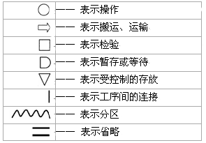
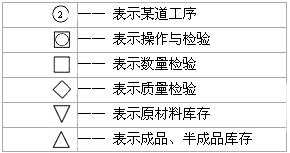

1 . 教学安排
2 . 程序分析概述
 程序分析记录符号
程序分析记录符号
程序分析技巧
程序分析的种类及相应图表
程序分析的实施及步骤
3 . 工艺程序图
4 . 流程程序图
5 . 流程线路图分析
6 . 线路分析
7 . 思考与练习题
 返回课程学习首页
返回课程学习首页
程序分析记录符号
实施的基本程序，一个十分重要的步骤是记录现行方法的全部事实。整个改进能否成功，主要取决于所记录事实的准确性，因为这是严格考查、分析和开发改进方法的基础。
为了能方便、迅速、正确地表示任何工作的程序，美国机械工程师学会(ASME)将吉尔布雷斯设计出的40种符号加以综合制定出5种符号，1979年由美国制定为国家标准 (ANSLYl5—1979)，以便以标准格式精确地记录详细信息。我国参考美国、日本等国标准，制定了自己的标准：

这些程序分析记录符号在实际使用时还可根据具体情况灵活变换，设计出其它的派生符号，如：
